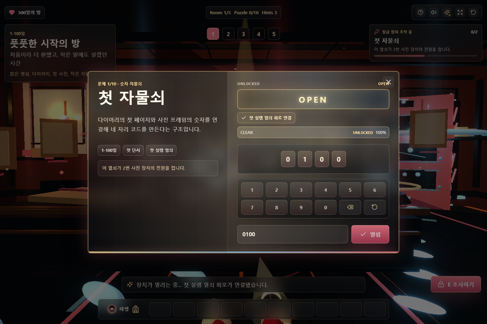
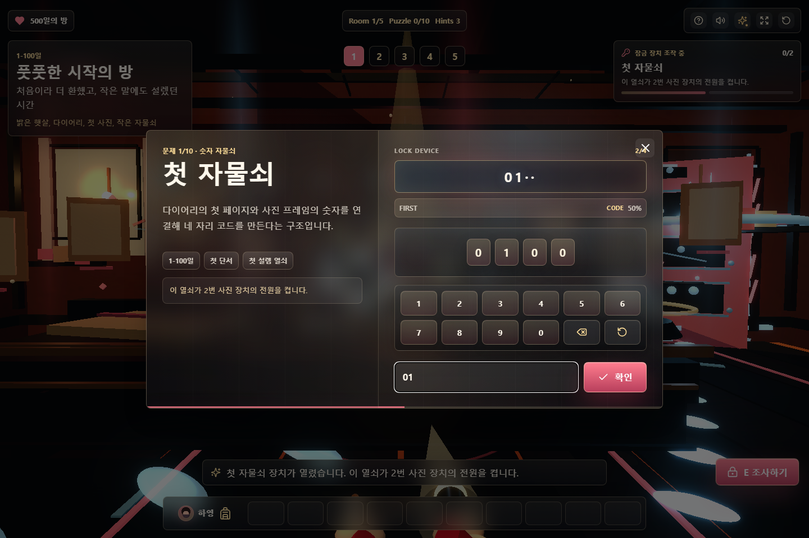
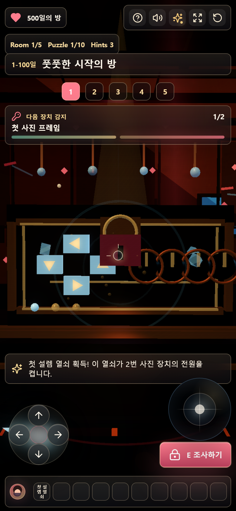

Design Improvement: Unlock Feedback
TL;DR: 정답 제출 후 모달이 즉시 닫히던 흐름을, 약 1.4초 동안
OPEN readout과 회로 연결 상태를 보여준 뒤 3D 자물쇠/문 해제 연출로 이어지게 바꿨습니다.
Current State

Improvement Ideas Implemented
1. Hold Success Before Closing
Lazyweb의 achievement unlock/성공 모달 참고들은 보상 순간을 사용자가 인지할 수 있게 잠깐 붙잡습니다. 이 패스에서는 정답 제출 즉시 모달을 닫지 않고, 짧은 성공 상태를 보여준 뒤 3D latch, sparks, flash, door motion으로 넘깁니다.
┌──────────── case file ────────────┬──────────── lock device ────────────┐
│ 첫 자물쇠 │ UNLOCKED OPEN │
│ 단서/보상/연계 설명 │ [ O P E N ] │
│ 첫 설렘 열쇠 │ ✓ 첫 설렘 열쇠 회로 연결 │
└───────────────────────────────────┴────────────────────────────────────┘
2. Tie Modal State To The World Reaction
Eikon식 laser/targeting 참고에서 가져온 패턴은 "한 지점의 반응이 장면 전체로 퍼진다"는 감각입니다. 모달 안에서는 OPEN readout, 진행 rail, 버튼 상태가 바뀌고, 그 다음 기존 3D 장치의 latch/bolt/spark가 이어집니다.
3. Keep The Test Harness Honest
render_game_to_text()에 unlockFeedbackUX와 activeUnlockFeedback를 추가했고,
npm run verify:game이 모든 퍼즐 풀이 중 성공 상태를 확인하게 했습니다.
What's Working
- 기존 2구역 lock console 구조는 유지하면서 성공 상태만 얹어서 레이아웃 리스크가 작습니다.
- 모바일에서는 모달 후속 해제 상태와 HUD가 겹치지 않고, 자동 검증에서 모바일 조작과 캔버스 픽셀이 유지됩니다.
- 프로덕션 UX는 1.4초 hold, 시각 QA만 디버그 hold를 써서 캡처 안정성을 얻었습니다.
All References

